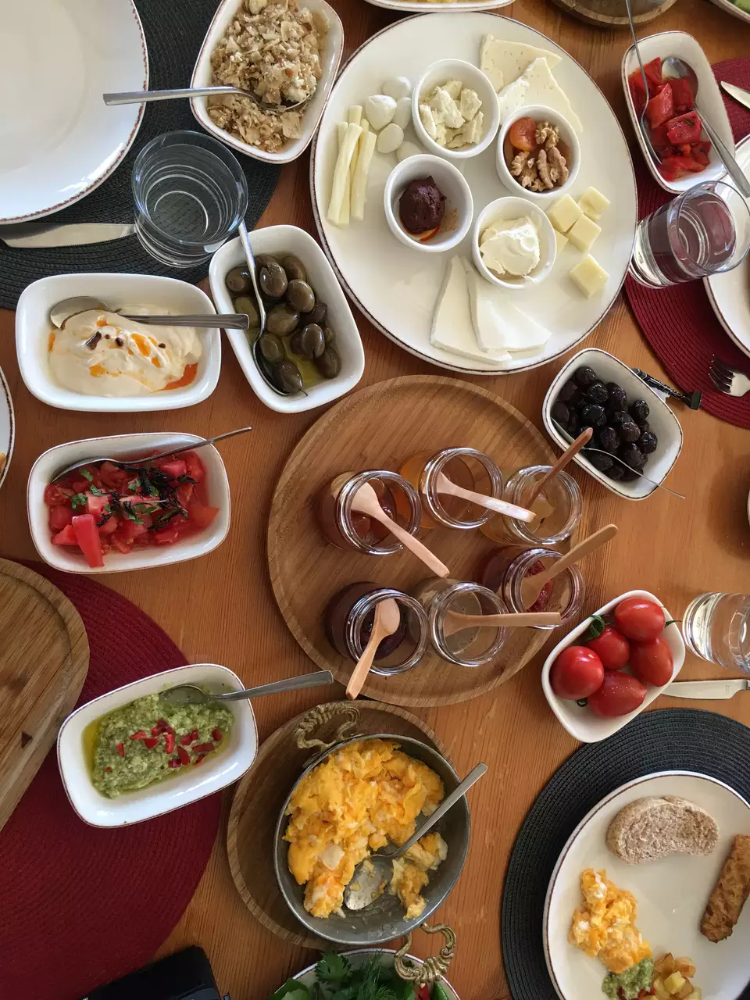

Turkish cuisine can't be discussed without paying special attention to the Turkish breakfast. It is a truly unique start to the day, with a line-up of tastes all it's own. Most Turkish folks begin their mornings just like the rest of the world. They wake up, get ready for their day, send their kids off to school and of course, have their first meal. However, the similarity stops here. Breakfast in Turkey is not just a necessity; it's a traditional family gathering, a sit-down affair with a line-up of tastes all its own that you start looking forward to the night before.  Each morning the tea is lovingly brewed, and the table is set with small plates and flatware designed especially for eating breakfast foods in bite-size portions. Foods are arranged elegantly no matter how modest the table.
The following elements are basic and very important: White bread (most common type) White cheese (beyaz peynir): It is a salty, white cheese made from unpasteurized milk. It is very similar to Feta. Old cheese (kaşar peynir): It is a very tasty yellow and medium hard cheese made from unpasteurized sheep milk. Black and green olives (zeytin) Butter, honey, jam Omelette or boiled eggs (yumurta) Sliced tomatoes and cucumbers Turkish tea (çay) during breakfast Turkish coffee after breakfast
Every region in Turkey has a variation on kahvalti, from the kind with freshly milled olive oil poured over sliced tomatoes and cucumbers in tiny villages on the northern Aegean coast to the repast of flaky golden flatbread envelopes (katmer) filled with cream and sprinkled with pistachios in the south central city of Gaziantep. In Van, in eastern Turkey, an entire street is dedicated to breakfast, the shops renowned especially for their local cheese and honeys. Regardless of regional variations, there are some things you can always expect to find on your plate: bread baked that morning; honey and cream and preserves (rose jam! fig marmalade!); green peppers, tomatoes, cucumbers.